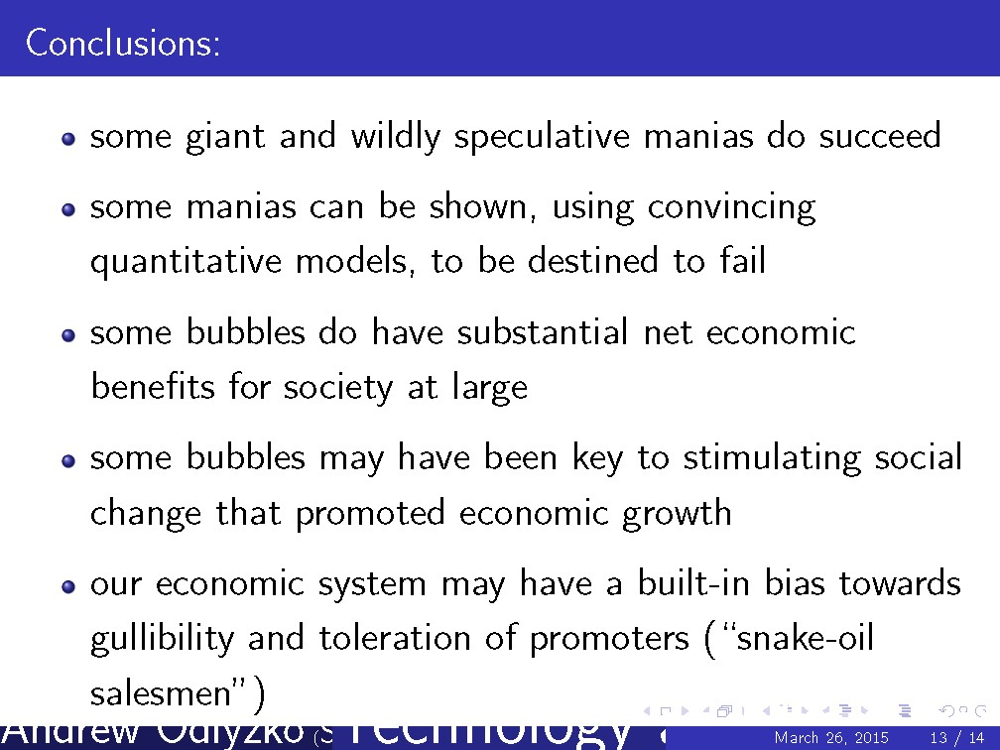
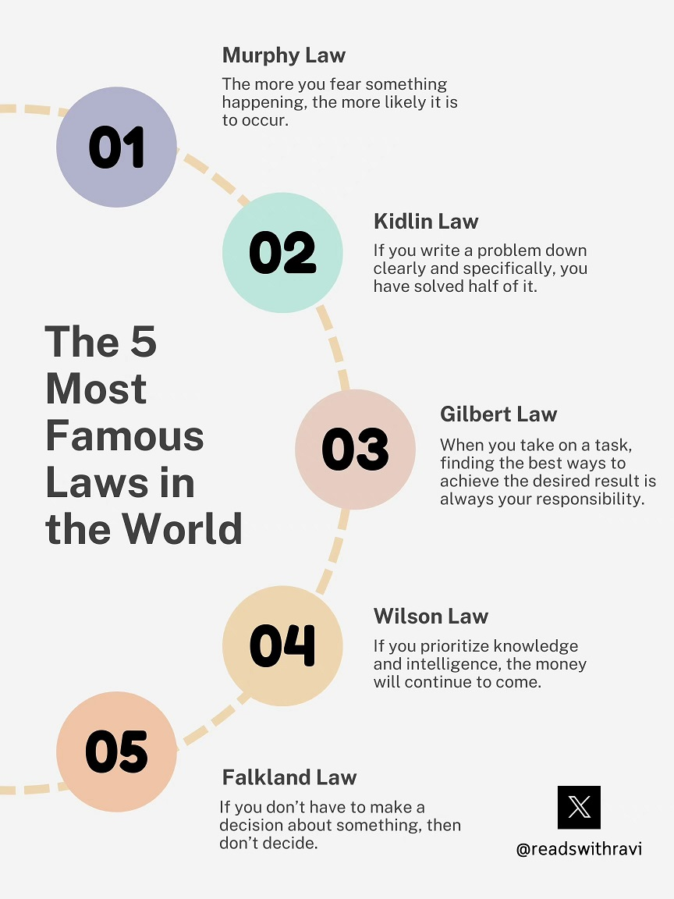
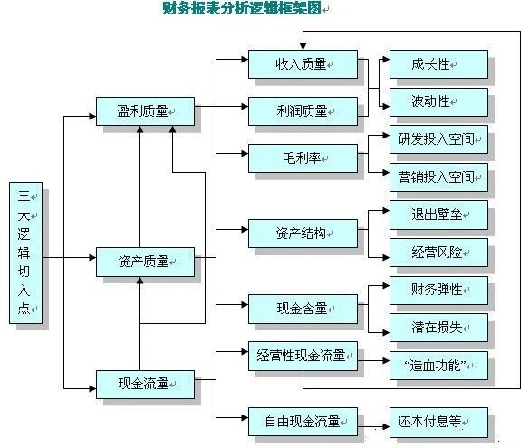
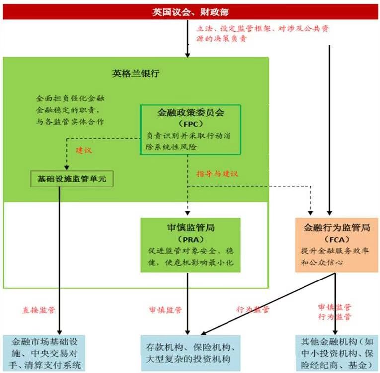
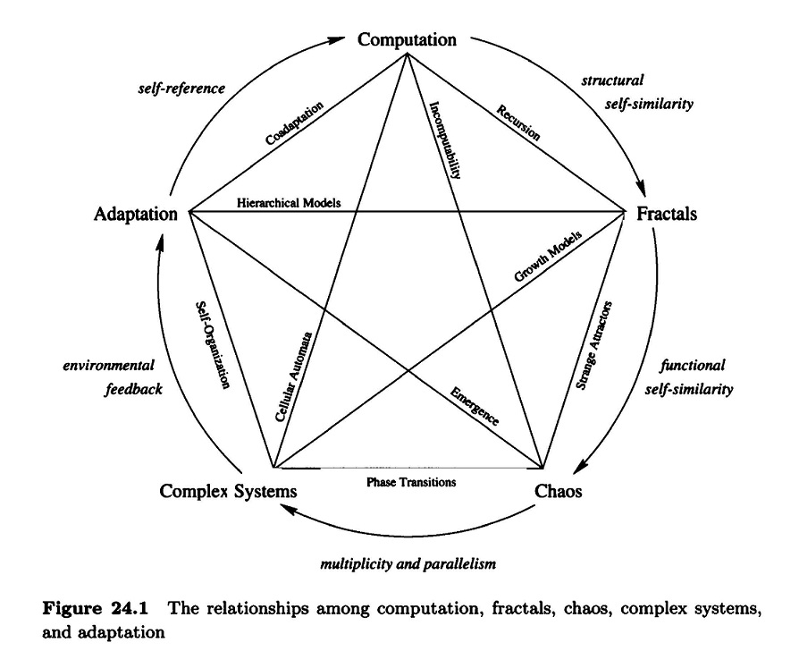

1、周朝：观水有道，必观其澜。流水为物，不盈不行。
2、秦朝：君子之志，不成不达。人之其有，德慧术知。
3、汉朝：恒存疢疾，孤尊逆子。其操峭危，其虑患深。
4、唐朝：古之为关，将以御暴。今之为关，将以施暴。
5、宋朝：不仁得国，有之者矣。不仁命世，未之有也。
6、明朝：山径之蹊，介然成路。为间不用，茅塞之矣。
7、延安：耳目之官，不思而蔽。物物交物，引之而已。
8、雄安：太白若辱，广德若亏。健行若偷，质真若渝。
喻良教授从“问题”这一概念的数学化开始，“问题”被定义为一集自然数，并通过一些例子展示了这种定义的合理性。接下来，喻老师讨论了图灵机和可判定性，并列举了一些不可判定问题，如停机问题、一阶数论、希尔伯特第十问题等，然后引入了图灵归约和图灵度的概念，并借此引出讲座的核心问题：“归约到停机问题”是否是证明一个问题不可判定的唯一方法？喻老师详细地介绍了历史上对这个问题的两个看似相反的回答：首先是Sacks等人证明的定理“几乎所有的问题都不比停机问题更困难”，然后是Posner-Robinson定理“每个不可解问题都可以在某种意义上归约到停机问题”。接下来，喻老师介绍了与此相关的著名的马丁猜想，并证明了马丁猜想在集合论公理系统ZFC中不成立。
讲座的第二部分，喻老师详细讲解了随机性。他首先介绍了历史上对于随机性的三种不同的定义，这三种定义被Schnorr证明是等价的，它们分别从不同的视角（不可压缩性、无区别性、不可预知性）来刻画随机性。然后介绍了Chaitin对于随机实数的典范构造，Miller和他对于1-随机性的等价刻画，以及van Lambalgen对于随机对的等价刻画。接下来，喻老师深入讨论了随机性的比较问题，引入了四种随机实数之间的大小关系，并介绍了Miller和他对于这些关系的研究，从而揭示了“越随机计算能力就越弱”这一深刻现象。
我是做数理逻辑的，我在研究中发现，一个随机的东西是包含很多信息的，但可以证明，越随机的东西计算能力越弱。人们可能会认为随机的东西信息越多，所提供的知识就越多，但实际上恰恰相反。这对哲学家们来说可能是个很好的切口，哲学家可以去解释数学家所提出的概念，将哲学和科学结合起来，帮助科学家们理解认识这种现象。
1、The Industrial Revolution, Early Capital Markets.

2、The military drives commerce and vice versa.

3、Capital sloshes around seeking its highest return.
4、Horizontal beats vertical.
5、Intelligence moves out to the edge of the network.

6、Lower prices drive wealth.
7、Modern Capital Markets.

8、Components Needed for Computing, Digital Computers.
